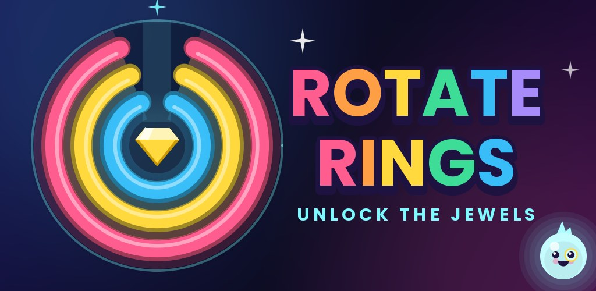
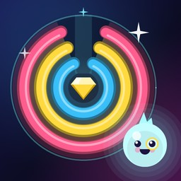

Luca Bartiromo Games
Luca Bartiromo Games

Rotate Rings
Spin the rings and bring every gap to the top: when they line up, a jewel piece slides free. Rebuild 8 precious jewels piece by piece, with Lumi and his jeweler's loupe.Gira gli anelli e porta tutte le aperture in alto: quando sono allineate, un pezzo di gioiello si libera. Ricomponi 8 gioielli preziosi pezzo dopo pezzo, con Lumi e la sua lente da gioielliere.Gira los anillos y lleva todas las aberturas arriba: cuando se alinean, una pieza de joya queda libre. Reconstruye 8 joyas preciosas pieza a pieza, con Lumi y su lupa de joyero.Tourne les anneaux et amène toutes les ouvertures en haut : quand elles sont alignées, une pièce de bijou se libère. Reconstitue 8 bijoux précieux pièce par pièce, avec Lumi et sa loupe de bijoutier.Dreh die Ringe und bring alle Öffnungen nach oben: Sind sie ausgerichtet, löst sich ein Juwelenteil. Setze 8 kostbare Juwelen Stück für Stück zusammen, mit Lumi und seiner Juwelierlupe.Gire os anéis e leve todas as aberturas para cima: quando se alinham, uma peça de joia se solta. Remonte 8 joias preciosas peça por peça, com a Lumi e sua lupa de joalheiro.Крути кольца и выводи все прорези наверх: когда они совпадут, деталь украшения освободится. Собери 8 драгоценностей по кусочкам вместе с Луми и его лупой ювелира.Halkaları çevir ve tüm boşlukları yukarı getir: hizalandıklarında bir mücevher parçası serbest kalır. Lumi ve kuyumcu büyüteciyle 8 değerli mücevheri parça parça tamamla.リングを回して、すべてのすき間を上にそろえよう。そろうと宝石のピースが外れます。ルミと宝石ルーペと一緒に、8つの宝石をひとつずつ完成させよう。링을 돌려 모든 틈을 위로 맞추세요. 틈이 맞으면 보석 조각이 풀려납니다. 루미와 보석 돋보기와 함께 귀한 보석 8개를 조각조각 완성하세요.
- 160 levels that get trickier step by step, with linked rings160 livelli sempre più ingegnosi, con anelli collegati160 niveles cada vez más ingeniosos, con anillos unidos160 niveaux de plus en plus astucieux, avec des anneaux liés160 Level, die immer kniffliger werden, mit verbundenen Ringen160 níveis cada vez mais engenhosos, com anéis ligados160 уровней, которые становятся всё хитрее, со связанными кольцамиBağlı halkalarla giderek zorlaşan 160 seviyeつながったリングも登場する、だんだん手ごわくなる160レベル연결된 링과 함께 점점 어려워지는 160개 레벨
- 8 jewels, each broken into 20 pieces: pocket watch, ruby ring, royal crown and more8 gioielli smontati in 20 pezzi: orologio da taschino, anello di rubino, corona reale e altri8 joyas divididas en 20 piezas: reloj de bolsillo, anillo de rubí, corona real y más8 bijoux découpés en 20 pièces : montre de poche, bague en rubis, couronne royale et plus8 Juwelen in je 20 Teilen: Taschenuhr, Rubinring, Königskrone und mehr8 joias divididas em 20 peças: relógio de bolso, anel de rubi, coroa real e mais8 драгоценностей по 20 деталей: карманные часы, кольцо с рубином, корона и другие20 parçaya ayrılmış 8 mücevher: cep saati, yakut yüzük, kraliyet tacı ve daha fazlası20ピースに分かれた8つの宝石：懐中時計、ルビーの指輪、王冠など20조각으로 나뉜 보석 8개: 회중시계, 루비 반지, 왕관 등
- Gems and helps when you are stuck: Hint, Auto Spin and SolveGemme e aiuti quando sei bloccato: Indizio, Gira e RisolviGemas y ayudas cuando te atascas: Pista, Girar y ResolverGemmes et aides quand tu bloques : Indice, Tourner et RésoudreEdelsteine und Hilfen, wenn du feststeckst: Tipp, Drehen und LösenGemas e ajudas quando travar: Dica, Girar e ResolverСамоцветы и помощь, если застрял: Подсказка, Поворот и РешитьTakıldığında elmaslar ve yardımlar: İpucu, Çevir ve Çöz困ったらジェムでヒント・自動回転・解決막히면 젬으로 힌트, 자동 회전, 해결
- 10 languages:10 lingue:10 lenguas:10 langues:10 Sprachen:10 línguas:10 языков:10 dil:10 言語:10개의 언어: English, Italiano, Español, Français, Deutsch, Português, Русский, Türkçe, 日本語, 한국어